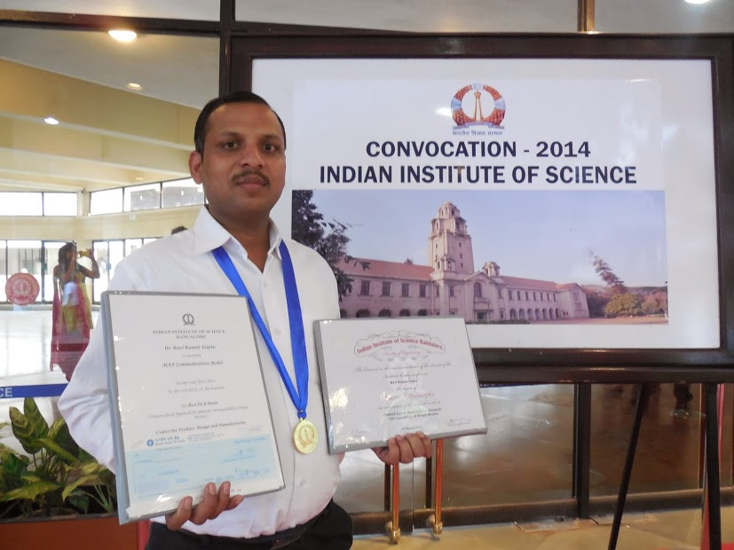

Dr. Ravi Kumar Gupta Honoured With Teaching Excellence Awards 2018
An award is something given to a person in recognition of his excellence in a certain field. Teaching Excellence Awards 2018 (TEA - 2018) was an effort of MT Research and Educational Services (MTRES) in association with Buzzingg and Indian Achievers Story to recognition the best teachers (Nation Builders) for their special contribution in respective domain. Meet one of the awardees, Dr. Ravi Kumar Gupta, who has been honoured with TEA-2018 as Excellent Teacher.
Dr. Ravi Kumar Gupta was honoured with MTRES Teaching Excellence Award 2018
Reading success stories of great people stimulates motivational enzyme within us and we all wish to emulate them on the path of success. Such is the story of man who has carved niche in his own way and has proved himself like a phoenix whose name is Dr. Ravi Kumar Gupta. Dr. Ravi Kumar Gupta is Associate Professor in Mechanical Engineering Department at Manipal University Jaipur. He did his schooling from Government Secondary School, Karauli and is a graduate in Mechanical Engineering and holds a Masters degree in Computer Aided Design and Manufacturing from India’s prestigious institute Motilal Nehru National Institute of Technology Allahabad. Someone should never view challenges as a disadvantage. Instead, it's important to view them as stepping stone as the experience of facing and overcoming adversity is actually one of the biggest advantages. Dr. Ravi faced extreme hardships during his Mechanical Engineering as he belonged to a remote village but as it is said that “Fortune favours the Brave” his uncle Dr. Pitam Chand helped him in learning academics and day to day activities. Being from a government school, a graduate in Mechanical Engineering and working with the private industries, getting admission in Motilal Nehru Institute with full scholarship was a dream coming true which boosted his morale. Dr. Ravi Kumar entrenched a Memorandum of Understanding between Manipal University Jaipur and Ecole Centrale de Nantes which is in France for Academic Collusion. He even visited Canada, France, UK, Germany, Italy, Turkey, Switzerland, Greece, Brussels, Netherlands and Spain for Research work which is backed by Manipal University Jaipur. Everyone goes through diverse and numerous experiences during one’s life. Each record captures a different turning point in the life, and such a turning point came into the life of Dr Ravi when he was put forth a job offer from the campus and at the same time received a call from the most premium research institution of India “Institute of Science Bangalore” for admission in Ph.D. Since it is difficult to get admission in the Institute and has been bestowed by a life time opportunity he decided to go for Institute of Science Bangalore under the guidance of Prof. Balan Gurumoorthy.
Dr. Ravi Kumar Gupta was honoured with MAA Communications Gold Medal
Dr. Ravi is Doctorate in Engineering from the most prestigious research institute of India and has even accomplished MAA Communications Gold Medal for the Best Doctoral Thesis at IISc. He is even backed by the support of IISc Bangalore, French Embassy in India and University of Bordeaux when he visited France and UK for research work. He commenced his teaching profession in the year 2012 as Associate Professor at PES Institute of Technology, Bangalore and then affiliated himself with National Institute of Technology, Silcher as Assistant Professor before moving France to join European Project under the guidance of Prof. Alain Bernard and Farouk Balkadiat Ecole Centrale de Nantes (France). Dr Ravi even worked with group of academic researchers and industrial partners involved in a Europe Commission project “ProRegio” which is a consumer driven design of product services and project networks so that the customers can acclimate to regional market requirements with a budgeting of 5.1 Million Euro involving 12 partners from 5 different countries. Dr. Ravi has organized number of conferences, workshops, seminars and symposium and is associated with Design Society, Indian Society for Technical Education, Institution of Engineers (I). Dr. Ravi Kumar Gupta has published more than 40 articles and two patents. His top cited papers are in Journals of Computer-Aided Design (Elsevier), Proecedia CIRP (Elsevier), Journal of Rapid Prototyping (Emerald Insight), Robotics and Computer Aided Manufacturing (Elsevier), Computers and Industrial Engineering (Elsevier), CIRP Journal of Manufacturing Science and Technology (Elsevier), SV-Journal of Mechanical Engineering. His research interests are computer aided design and manufacturing, product lifestyle management, product informatics, geometric modeling, augmented and virtual reality and additive manufacturing.